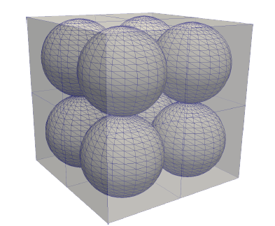
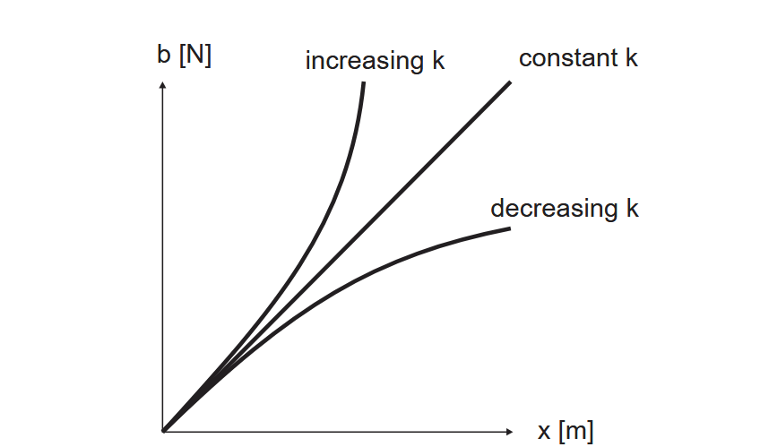
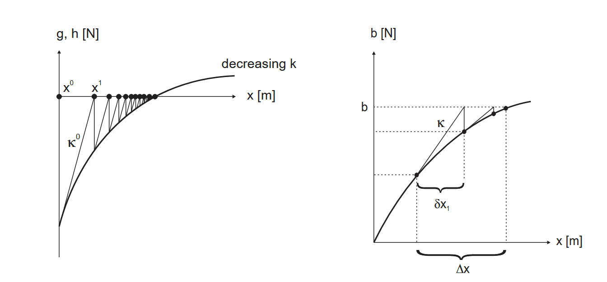
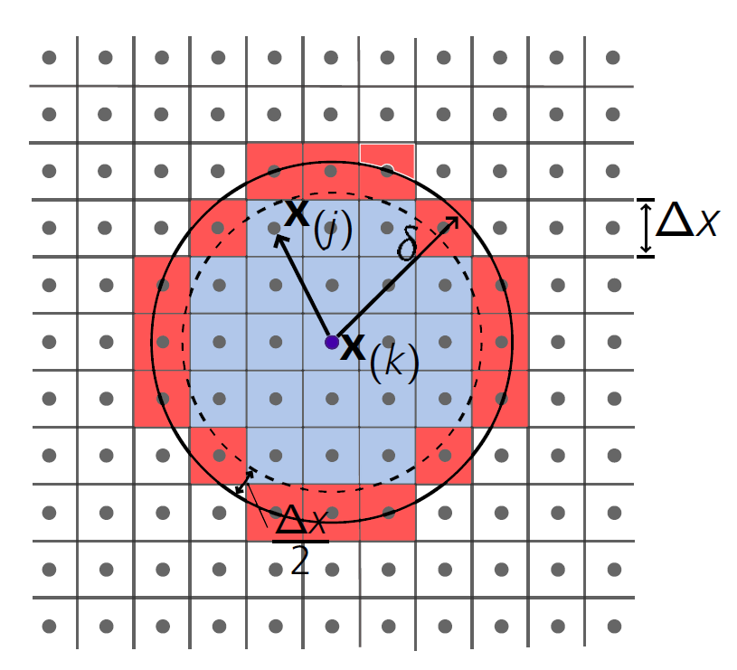

Seminar 2: Material point method and solver
- particle method
- points are grid fix (no pure mesh free method)
Advantage
- no topology
- disconnection of points is easy
Disadvantage
- convergence is low
- gradients purely described by points
Equations in the Quasi-Static Material Point Method Algorithm
1. Mapping Material Point Quantities to Grid Nodes
- Nodal Mass
\[M_{\text{node}} = \sum_{mp} m_{mp} \, N_{mp-nd}\]
- Nodal Velocity
\[\mathbf{V}_{\text{node}} = \frac{1}{M_{\text{node}}} \sum_{mp} \mathbf{P}_{mp} \, N_{mp-nd}\]
- Internal Force Vector
\[\mathbf{F}_{\text{node}}^{\text{internal}} = \sum_{mp} \boldsymbol{\sigma}_{mp} \, \nabla N_{mp-nd}\]
- External Force Vector
\[\mathbf{F}_{\text{node}}^{\text{external}} = \sum_{mp} \mathbf{b} \, N_{mp-nd}\]
2. Solving Equations of Motion on the Grid
- Nodal Acceleration
\[\mathbf{A}_{\text{node}} = \frac{\mathbf{F}_{\text{node}}^{\text{external}} + \mathbf{F}_{\text{node}}^{\text{internal}}}{M_{\text{node}}}\]
- Updated Nodal Velocity
\[\tilde{\mathbf{V}}_{\text{node}} = \mathbf{V}_{\text{node}} + \mathbf{A}_{\text{node}} \, \mathrm{d}t\]
3. Mapping Back to Material Points
- Material Point Acceleration
\[\mathbf{a}_{mp} = \sum_{nd} \mathbf{A}_{\text{node}} \, N_{nd-mp}\]
- Strain Rate (Infinitesimal Strain Theory)
\[\dot{\boldsymbol{\varepsilon}}_{mp} = \sum_{nd} \frac{1}{2} \left[ \mathbf{V}_{\text{node}} \nabla N_{nd-mp} + (\mathbf{V}_{\text{node}} \nabla N_{nd-mp})^T \right]\]

 Figure taken from [2].
\[\rho \ddot{u}_i = \frac{1}{2}\sum_j (f_{ji}V_i-f_{ij}V_j)+b_i\]
\[F_i + b_i=\rho\ddot{u}_i\]
Static case
 Figure taken from [2].
\[\mathbf{F}(\mathbf{u}_{i+1}) + \mathbf{b}_{i+1} \rightarrow 0\]
Verlet time integration
\[\mathbf{u}_{i+1} = \mathbf{u}_{i} + \Delta t\dot{\mathbf{u}}_{i} + \frac12 \Delta t^2\ddot{\mathbf{u}}_{i}\]
with
\[\ddot{\mathbf{u}}_{i} = \frac{\mathbf{F}_i}{\rho}\]
where $\rho$ is the mass density of the point and $\mathbf{F}_i=\mathbf{F}_{external}-\mathbf{F}_{internal}$ for the current time step.
For parabolic time integration as in temperature models the following schema is used
\[\boldsymbol{\tau}_{i+1} = \boldsymbol{\tau}_i - \Delta t \frac{\mathbf{H}}{\rho C_v}\]
where $\rho$ is the mass density, $C_v$ is the specific heat capacity and $\mathbf{H}$ is the heat flux of each point [10].
For the time intergration a stable increment has to be determined.
Volume correction

\[\lambda_{corr}=\frac{2V_0}{V(\mathbf{x})+V(\mathbf{x}')}\]
The reference volumen $V_0$ is depended on the dimension (3D or 2D)
\[V_{0-3D}=\frac{4\pi\delta^3}{3}\]
\[V_{0-2D}=\frac{\pi\delta^2h}{4}\]
this factor is than multiplied to the bond force $\mathbf{t}_{corr} =\lambda_{corr}\mathbf{t}$
You can apply the surface correction initialy for all outer surfaces and continuous, for cracks or additive manufacturing.
using Plots
using Polynomials
# Definition des Intervalls
x = range(0, π, length=200)
y = sin.(x)
# Plot vorbereiten
plot(x, y,
label="sin(x)",
lw=2,
legend=:bottomleft,
xlabel="x",
ylabel="y",
size=(1200, 800))
# Anzahl der Stützstellen
n_nodes = 8
x_nodes = range(0, π, length=n_nodes)
y_nodes = sin.(x_nodes)
# Approximation mit Polynomen 2. bis 7. Ordnung
for deg in 1:3
# Polynomanpassung
p = fit(x_nodes, y_nodes, deg)
y_approx = p.(x)
plot!(x, y_approx, label="Grad $deg")
end
# Punkte anzeigen
scatter!(x_nodes, y_nodes, label="Exact solution", color=:black)Set up your own model
header: x y block_id volume
0 0 1 1
1 0 1 1
2 0 1 1
3 0 1 1
4 0 1 1function generate_grid_fixed_spacing(filename, x_from, x_to, y_from, y_to, dx; block_id=1)
num_points_x = Int(floor((x_to - x_from) / dx)) + 1
num_points_y = Int(floor((y_to - y_from) / dx)) + 1
volume = dx * dx
open(filename, "w") do io
println(io, "header: x y block_id volume")
for j in 0:num_points_y-1
y = y_from + j * dx
for i in 0:num_points_x-1
x = x_from + i * dx
println(io, "$(x) $(y) $(block_id) $(volume)")
end
end
end
endPeriLab:
Discretization:
Node Sets:
Node Set 1: 1
Node Set 2: 5
Type: "Text File"
Input Mesh File: "truss.txt"
Models:
Material Models:
Test:
Material Model: "Bond-based Elastic"
Symmetry: "isotropic plane stress"
Young's Modulus: 7000
Poisson's Ratio: 0.3
Blocks:
block_1:
Block ID: 1
Material Model: "Test"
Density: 2e-9
Horizon: 2
Boundary Conditions:
BC_1:
Variable: "Displacements"
Node Set: "Node Set 1"
Coordinate: "x"
Value: "100*t"
Type: Dirichlet
BC_2:
Variable: "Displacements"
Coordinate: "x"
Node Set: "Node Set 2"
Value: "0.1*t"
Type: Dirichlet
Solver:
Material Models: True
Initial Time: 0.0
Final Time: 1.0
Number of Steps: 20
Static:
Show solver iteration: true
Residual tolerance: 1e-7
Solution tolerance: 1e-8
Residual scaling: 7000
m: 550
Maximum number of iterations: 100
Outputs:
Output1:
Output Filename: "truss"
Output File Type: Exodus
Number of Output Steps: 20
Output Variables:
Displacements: True
Number of Neighbors: True
Forces: True